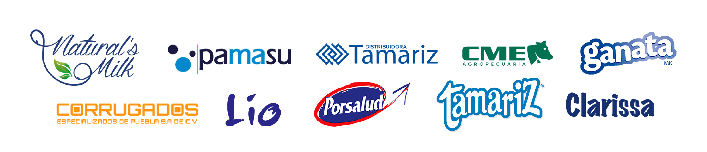

Somos un grupo de empresas 100% mexicanas y orgullosamente poblanas, dedicadas a la pasteurización, fabricación de productos de cartón, ganadería y el transporte. Tenemos un fuerte compromiso con el crecimiento de nuestro país, por eso buscamos promover el desarrollo comunitario, generando empleos que impactan de forma positiva nuestro entorno.
Estamos en constante evolución para llevar a tu hogar los mejores productos que tu familia merece. Todo lo que hacemos en GRUPO MAULEC está enfocado en cumplir y superar las expectativas de nuestros inversionistas, clientes y consumidores
¿Quiénes somos?
Somos una empresa 100% mexicana y orgullosamente poblana, con más de 50 años de experiencia en la producción de leche de vaca de la más alta calidad.
Gracias a esa visión y empeño, hoy Tamariz es reconocida como una empresa pionera y experta en la producción, y ultrapasteurización de leche en México. Contando con más de 3,500 cabezas de ganado y produciendo diariamente 43,000 litros de leche de la más alta calidad.
Como parte de Grupo Maulec, la maquiladora de leche más grande del país, nuestra producción se realiza en una moderna planta que implementa las últimas tecnologías y los estándares más altos de higiene y calidad, con una impresionante capacidad de envasado de 1.3 millones de litros de leche diarios.
No descansaremos para seguir ofreciendo la mejor relación calidad / precio y que cada vez más familias mexicanas nos conozcan y prefieran.
Copyright© 2021 Tamariz S. A. de C. V. Todos los derechos reservados | Aviso de privacidad